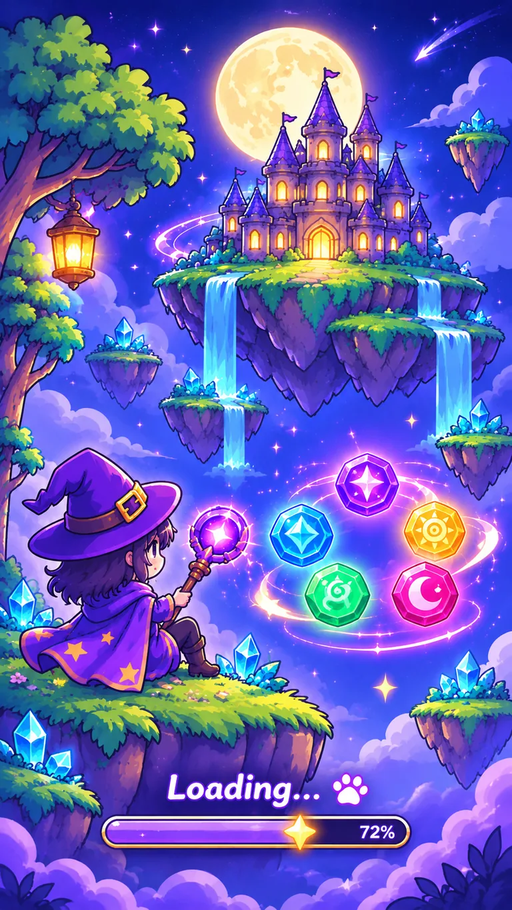
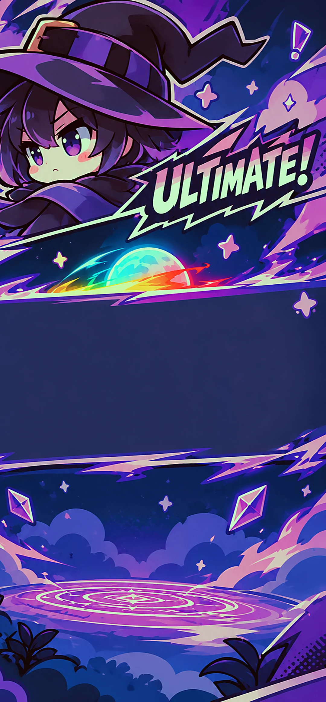

Istirahat dulu, mantranya nggak ke mana-mana.
Lima boss kucing meme berhasil dikalahkan. Kamu penyihir memori sejati!
Oyen berhasil dikalahkan! Boss baru untuk level 2 sedang disiapkan — nantikan kehadirannya.